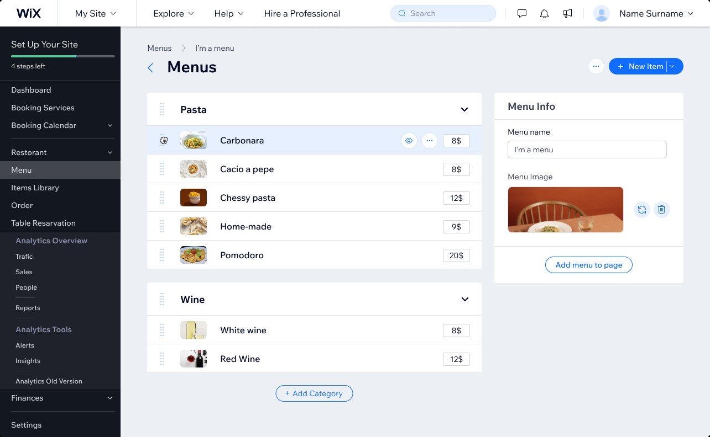

Interaction & Motion System

I collaborated with a skilled team to develop a user-friendly trigger and reaction system for Wix, involving research, UX design, and content development. Our goal was to enhance the overall user experience, resulting in a remarkable product.
Zigi's Needs

We experimented with Oculus Quest to create a virtual reality experience that explored communication between humans and virtual creatures, pushing the boundaries of interaction and opening new possibilities. graduation project from Bezalel Academy of Design & Arts
Menu Builder
This feature simplifying the creation of online restaurant menus, allowing restaurant owners to easily customize their menus.
Motion Design

Animations hold a special place in my heart, and I take great joy in creating them. Feel free to explore a few of my projects here.
Web Design
During my time at Wix, as part of the design studio, I developed several website templates based on market demands and user needs.
↳Sotaz Moseum ↳Motion Webinar ↳GDC ↳Fintec temp ↳Misician temp
Wolk Tour

I had the opportunity to develop the visual language for the interface of the walk tour feature in the Wix Editor.
Switch Layout